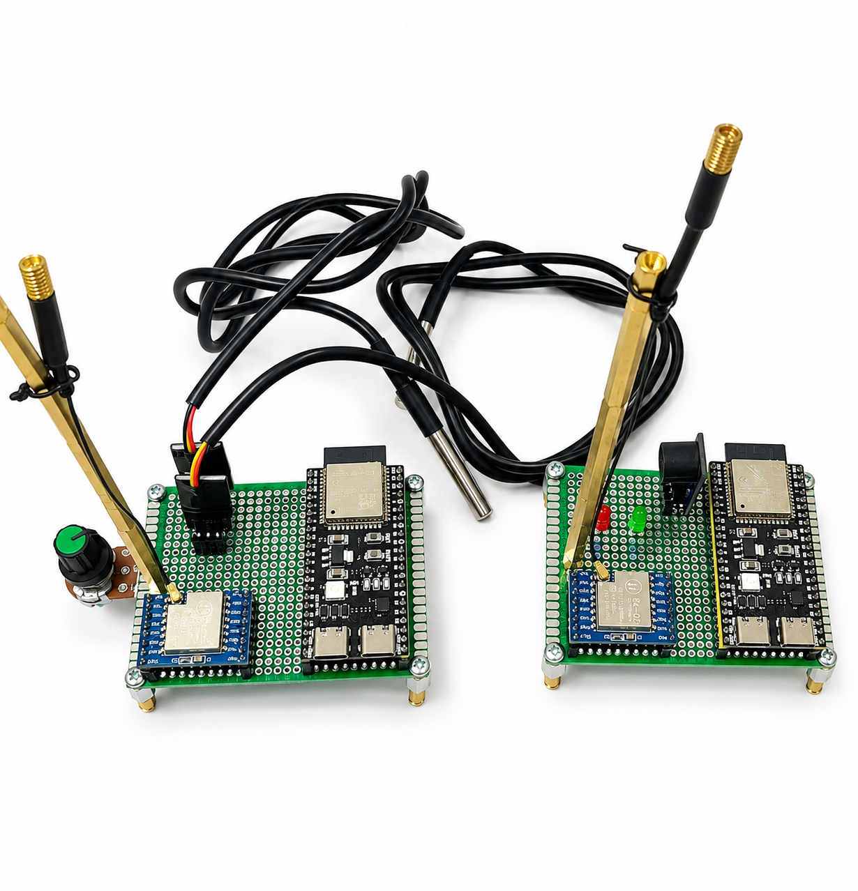
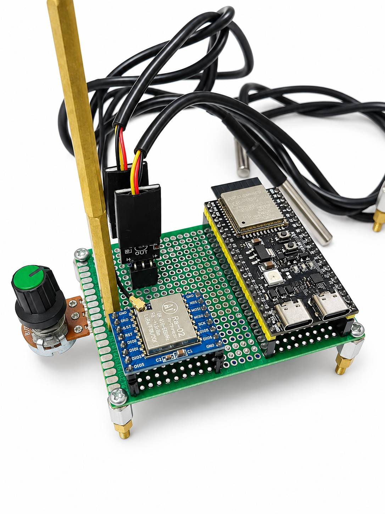
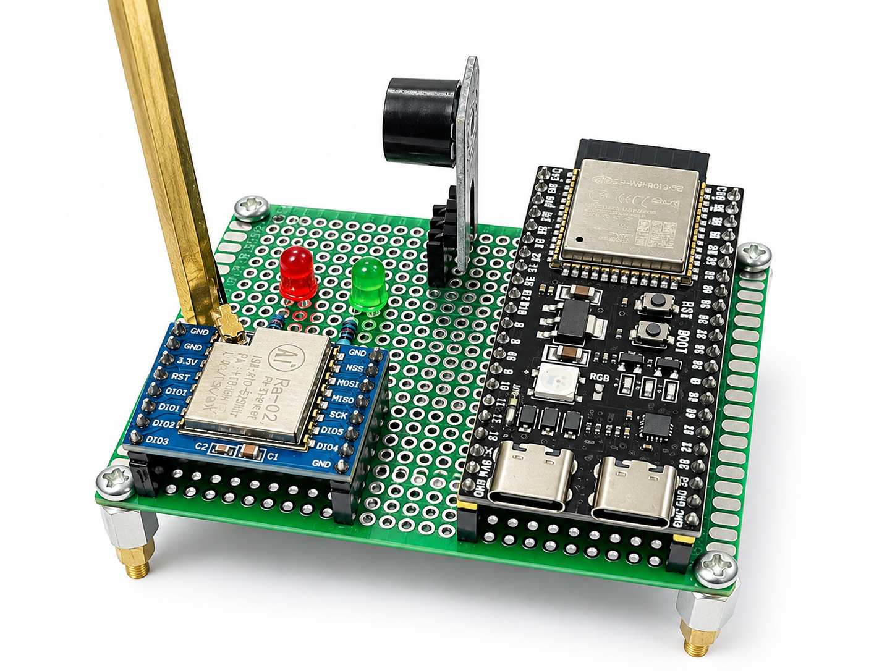
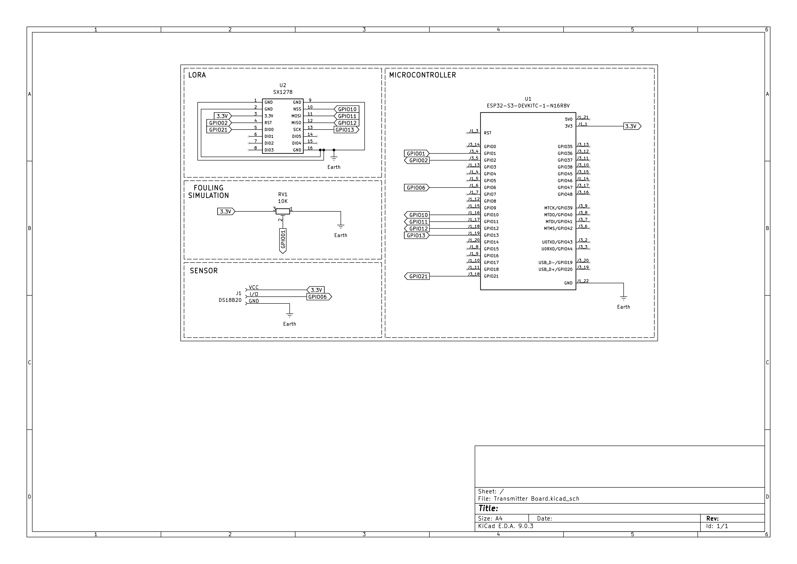
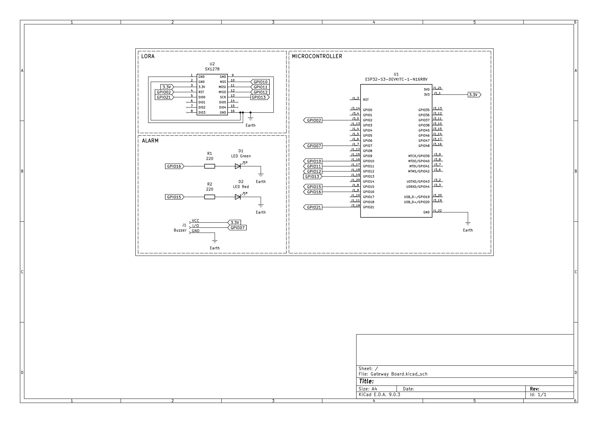

Full-Resolution Preview
Process instrumentation innovation by Tim Dicoba Aja Dulu from the Department of Instrumentation Engineering, Faculty of Vocational Studies, Institut Teknologi Sepuluh Nopember (ITS), Surabaya. A non-invasive sub-GHz wireless instrumentation system for thermal degradation detection and fouling monitoring on petrochemical refinery Heat Exchanger Networks (HEN), driven by deterministic thermodynamic edge computing on an ESP32-S3 microcontroller with resilient AODV multi-hop mesh failover.

Authentic documentation of the assembled and validated LoRa-OptiMesh hardware, including the Transmitter Node (Edge Sensor Terminal), Gateway Node (Base Station Receiver), and KiCad circuit schematic diagrams.
The LoRa-OptiMesh wireless telemetry system comprises two primary units communicating via sub-GHz 433 MHz band radio waves (Ai-Thinker Ra-02 / Semtech SX1278) utilizing Chirp Spread Spectrum (CSS) SF10 modulation:
Mounted directly onto the heat exchanger pipe flange. Acquires temperatures using SS316 DS18B20 probes, computes LMTD, U, and Rf thermodynamic metrics locally on the ESP32-S3, and broadcasts compressed 16-byte telemetry packets.
Stationed at the refinery control room. Receives LoRa transmissions, validates payload integrity via CRC-8, triggers acoustic buzzer and LED status alerts when critical thresholds are breached, and bridges data to SCADA.
Equipped with a sub-GHz antenna supported by impedance-matched brass standoff pillars and a PCB ground plane that minimizes electromagnetic interference (EMI) from refinery induction motors and pumps.

High-performance Xtensa LX7 dual-core 240 MHz SoC with 16 MB Flash and 8 MB Octal PSRAM. Runs the deterministic thermodynamic engine and manages circular ring buffering during network outages.
Sub-GHz LoRa transceiver with -132 dBm high sensitivity and +14 dBm transmit power. Interfaced to the ESP32-S3 via high-speed SPI bus (SCK: GPIO13, MISO: GPIO12, MOSI: GPIO11, NSS: GPIO10, DIO0: GPIO21).
3-pin terminal header (VCC 3.3V, Data GPIO6 with 4.7k pull-up resistor, GND) connected to corrosion-resistant, hydrocarbon-rated SS316 industrial probes.
Connected to ADC1 GPIO1 for dynamic laboratory fouling simulation, allowing instantaneous testing across clean to critical fouling transition states.

Aggregates incoming packets from the multi-hop mesh, parses serialized telemetry, and bridges real-time data to SCADA/HMI via UART or Modbus TCP interfaces.
Generates an 85 dB acoustic warning tone when fouling resistance Rf breaches the critical threshold (≥ 0.0005 m²K/W) or upon link loss detection.
Green LED on GPIO16 indicates active healthy telemetry (PDR > 99%), while Red LED on GPIO15 illuminates during critical fouling alerts and gateway outage warnings.
Antenna connection is reinforced with brass standoff pillars bonded directly to the PCB ground plane for optimal Signal-to-Noise Ratio (SNR).


| Subsystem | Peripheral Pin | ESP32-S3 Pin | Functional Description |
|---|---|---|---|
| LoRa SPI Transceiver | NSS (Chip Select) | GPIO10 | SPI Chip Select for Semtech SX1278 module |
| LoRa SPI Transceiver | MOSI / MISO / SCK | GPIO11 / GPIO12 / GPIO13 | High-speed SPI data bus (up to 10 MHz) |
| LoRa Control & Interrupt | DIO0 (Packet Rx/Tx Done) | GPIO21 | External interrupt on telemetry packet Rx/Tx completion |
| LoRa Control & Interrupt | RST (Hardware Reset) | GPIO2 | Active-low reset pulse for LoRa transceiver chip recovery |
| Temperature Sensor (Transmitter) | DS18B20 1-Wire Data | GPIO6 | Single-wire digital data bus with 4.7k pull-up resistor |
| Fouling Simulation (Transmitter) | RV1 10k Wiper | GPIO1 (ADC1_CH0) | 12-bit analog input for physical resistance threshold simulation |
| Acoustic Alarm (Gateway) | Buzzer I/O | GPIO7 | 2.7 kHz piezoelectric PWM signal driver for early warning |
| Visual Indicators (Gateway) | Red & Green LEDs | GPIO15 (Red) & GPIO16 (Green) | Network link status and critical fouling condition indicators (220 Ω resistors) |
Adjust process parameters below to observe real-time calculations of LMTD, overall heat transfer coefficient $U(t)$, fouling resistance $R_f$, and furnace fuel gas penalty in real time.
Evaluate sub-GHz LoRa (433.0 MHz) transmission resilience under relay node failure or complete gateway outage conditions.
Hardware engineering parameters and operational benchmarks of LoRa-OptiMesh based on empirical laboratory testing.